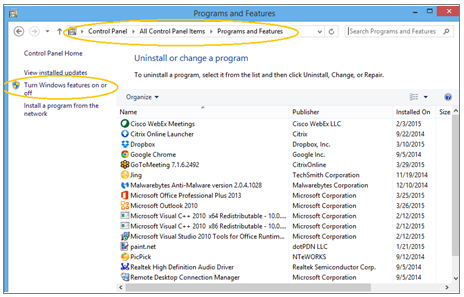
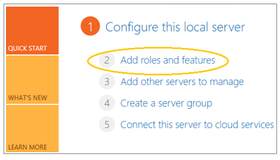
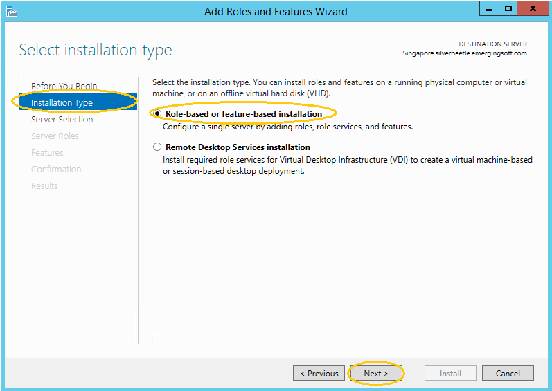
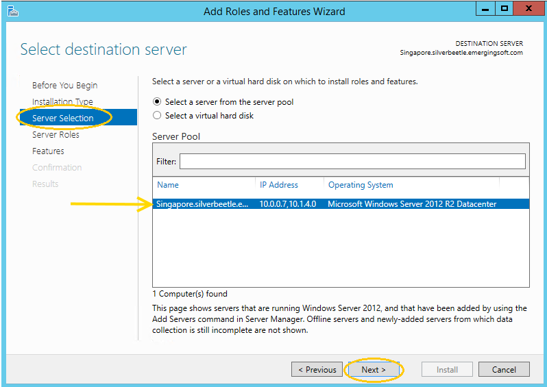
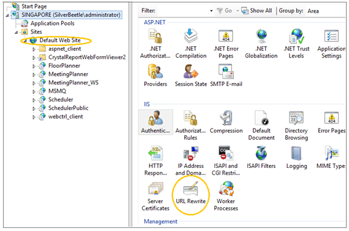
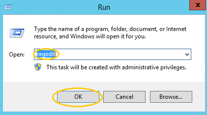
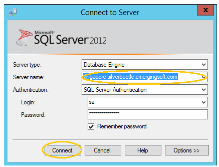
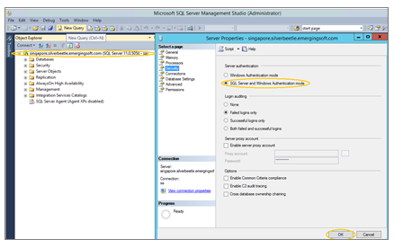

Server 2012 Prerequisite Setup
Application Server Prerequisite Setup
Web Server (Role)
- Go to Start > Control Panel > Programs and Features.
- Select Turn Windows Features on or off.

- Select Add roles and features from the ‘Server Manager/Dashboard’ window.

- Select Installation Type, and Role-based or feature-based installation from the 'Add Roles and Features Wizard' window, and Next.

- Select the server that MeetingPlanner will be installed on, and Next.

- From Server Roles of the ‘Add Roles and Features Wizard’ window, make sure roles i-v indicated below are enabled and installed, then select Next. Use the scroll bar on the right side of the ‘Add Roles and Features Wizard’ window to navigate. Use the file path in boldface to locate the required roles.
- i. Windows Authentication (Web Server (IIS)>Web Server>Security>Windows Authentication-Installed).
- ii. ASP.NET 4.5 (Web Server (IIS)>Web Server>Application Development>ASP.NET 4.5 Installed).
- iii. IIS 6 Metabase Compatibility (Web Server (IIS)>Web Server>Management Tools>IIS 6 Management Compatibility>IIS 6 Metabase Compatibility-Installed).
- iv. NET Framework 4.5 (Application Server>.Net Framework 4.5-Installed).
- v. Web Server (IIS) Support(Application Server>Web Server IIS Support-Installed).
Message Queuing Services
(Message Queuing>Message Queuing Services>Message Queuing Server/Directory Service Integration/HTTP Support):
- Select Features from the ‘Add Roles and Features Wizard’ window and verify the following prerequisites are selected:
- Message Queuing Server
- Directory Service Integration
- HTTP Support
- Enable to add prerequisites, and select Next. If the prerequisites are already enabled, Cancel to exit.
- From Confirmation, select Install.
- From Results, view Feature Installation, and Close.
- Restart the server if required.
Internet Information Services (IIS)
(SQL Server Management>Default Web Site>URL Rewrite)
- Verify the URL Rewrite Module in the ‘IIS Manager’ Window.
NOTE: For information on installing the module, see link: http://www.iis.net/downloads/microsoft/url-rewrite.

- Verify the Default Web Site bindings. The ‘Default Web Site’ bindings automatically default as shown below. After installation, the values can be changed.
- TCP Port: 80
- IP Address: (All Unassigned)
- Host Header Value: <none>
Microsoft .NET Framework
- Select Start > Run.
- Enter ‘regedit’ and OK.

- Navigate to the NDP node in the ‘Registry Editor’: (HKEY_LOCAL_MACHINE >Software >Wow6432Node>Microsoft >NET Framework Setup> NDP).
- Select v2.0.5.727.
- Verify .NET 2.0 is installed.
IMPORTANT: If the “Install” key does not equal “1,” please install .NET 2.0.
- Verify .NET 4.0 is installed. (HKEY_LOCAL_MACHINE >Software >Wow6432Node>Microsoft >NET Framework Setup> NDP>v4.0).
- Select Client.
IMPORTANT: If the “Install” key does not equal “1,” please install .NET 4.0.
Supporting Microsoft References:
- http://msdn.microsoft.com/en-us/kb/kbarticle.aspx?id=318785
- http://msdn.microsoft.com/en-us/library/hh925568.aspx
Database Server Prerequisite Setup
SQL Server
- Enable Mixed Authentication Mode:
- Open ‘Microsoft SQL Server Management Studio’ and Connect.

- Right click on the server name in the ‘Object Explorer’ window.
- Select Properties >Security.
- Select SQL Server and Windows Authentication Mode and OK.
